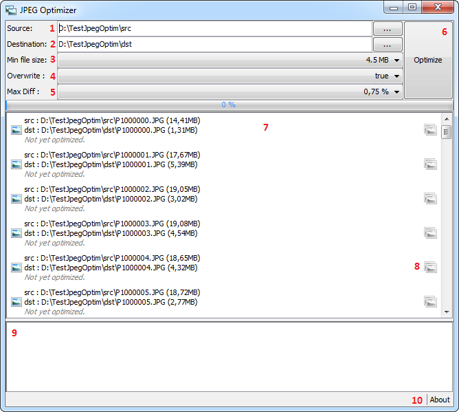
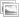
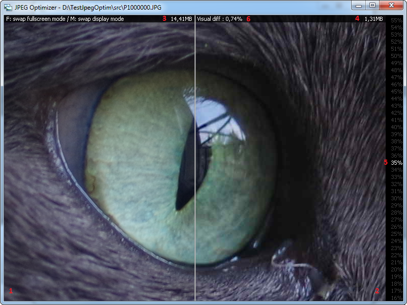
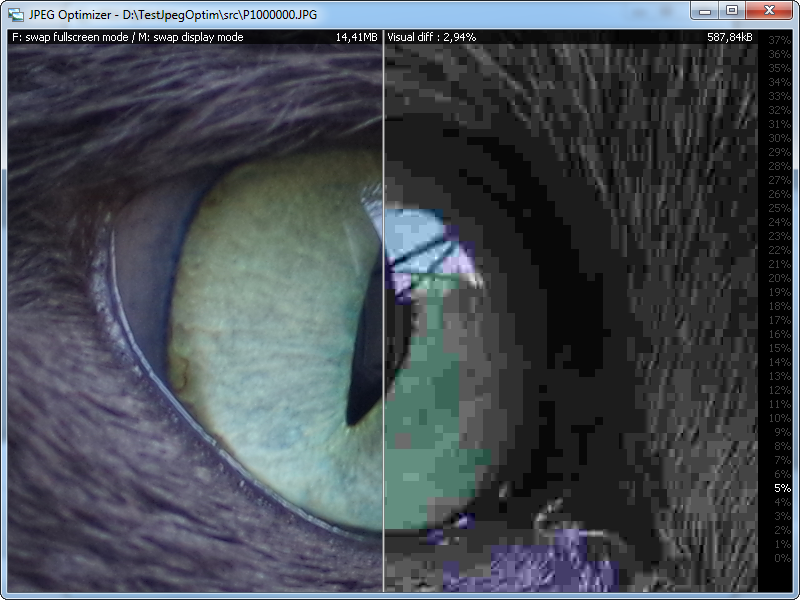
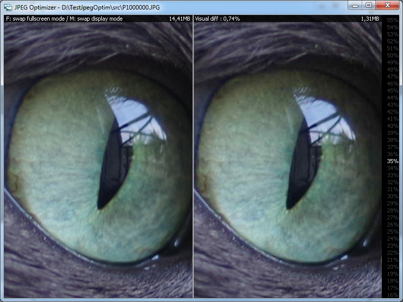

Description
JPEG Optimizer is designed for photographer who take a lot of pictures and so have a lot of jpeg files saved in their computer.
All theses pictures can rapidly use a lot of hard drive disc space. For example a full frame DSLR produce jpeg pictures files around 20MB and an APS-C DSLR produce jpeg files around 8MB. So having 1000 full frame pictures can take aroun 20GB of your hard drive space!
JPEG Optimizer is used to automatically optimize each JPEG picture file to reduce their file size by allowing only small visual difference (not really perceptual).
How it works?
The JPEG compression algorithm has a "quality" parameter which can be view as a "compression level". The higher the "quality" is, the lower the compression is (and so the result file size is important) and vise versa.
JPEG Optimizer will try all(*) "quality" parameter values (from 0% to 100%) and choose the lower one which make the visual difference to be really small and not humanly perceptual.
(*) In fact it use the dichotomic search which allow to find the result in only 7 steps instead of 100.
Example result
Here is one of my picture (yes, it's my cat!) displayed at 10% of it's original size. The original jpeg file, output from my camera, is 14.5MB. The optimized version jpeg file computed by JPEG Optimizer is only 1.4MB. JPEG Optimizer found that we can use a quality parameter value of 50% only. You can notice that it's humanly hard to view any visual difference.
Here is a crop of the picture, but displayed at 100%. You maybe can notice only really little visual differences.
Download
You can download the latest version of JPEG Optimizer in the dedicated releases page.
Pre Requirement
AutoSave is written in JAVA. So it's natively executable on all Operating System (Windows, OsX, Unix/Linux,...). You just need to have a JRE (Java Runtime Environement) installed on your system. Download it here.
Execute
To run JPEG Optimizer you just need to double click on JPEGOptimizer.jar.
As JPEG Optimizer manipulate large pictures files size, it will used a lot of memory (RAM).
The default Oracle JVM (Java Virtual Machine) maximum heap size is 1024MB. Which is enough. If not, you can run it via command line:
With 1024MB:
java -Xmx1024m -jar JPEGOptimizer.jar
With 2048MB:
java -Xmx2048m -jar JPEGOptimizer.jar
You can double click on JPEGOptimizer.bat to run the application with 1024MB. Feel free to edit this file to increase the max heap size parameter.
Tutorial used
Main window

- Source : The input source directory (jpeg files to otpmize). It will automatically list all jpeg files in 7
- Destination : The output source directory (where to save optimized jpeg files). It will automatically list all jpeg files in 7 (when input source directory is not empty).
- Min file size : It will not optimize jpeg file which size is greater to this value.
- Overwrite : If destination file already exist, the do not try to optimize if this parameter is set to false.
- Max Diff : It's the maximum visual difference percentage allowed between original jpeg picture and optimized jpeg one.
- Optimize button. Click on this button when you have setup all the 5 parameters
-  button. Click on one of this button to open the "viewer" to visually check the difference between original and optimized picture.
- The output log which is filled during optimization process (each step is described).
- About to open the about window
Viewer
You can open the viewer (clic on the button) on any picture (one at a time) to check the difference between original version (at left) and optimized one (at right).
If the picture is already optimized, it will open the optimized version on the right part. If not, the right part will be keep black.

- The original jpeg picture.
- The optimized jpeg picture.
- The original file size.
- The optimized file size.
- The jpeg compression quality parameter used to create the optimized jpeg in 2.
- The visual difference in percent between original and optimized pictures.
You can scroll and click on any quality value in the right side (5) to display a new "optmized version", so you can easly check which "visual difference quality percent" (6) is the best for you, and use this value in parameter in the main window for all of your picture.
Example clicking on 5%:

There are 2 displays mode in the viewer:
Split mode (as above) and a side by side mode. You can switch between by hittin the "M" key.

You can also display the viewer in fullscreen by hitting the 'F' key, and switch back to windowed mode with the same key.
Want to contribute?
You can contribute with JPEG Optimizer by installing it, using it, take a look at its source code and submitting issues and pull requests :)
Follow me
You can follow me: